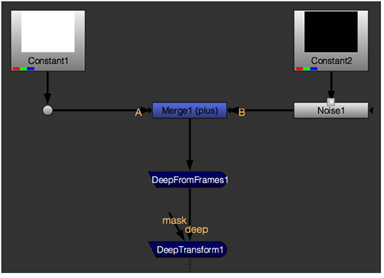
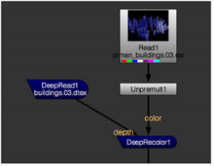
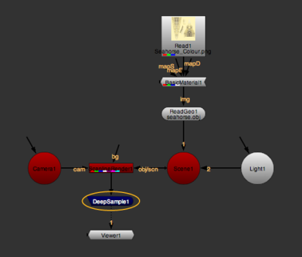
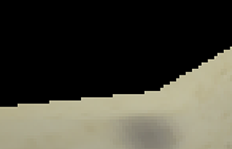
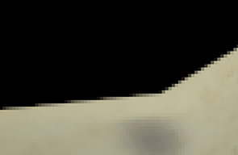
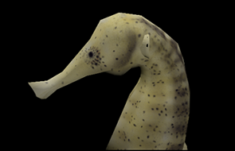
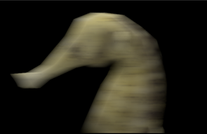
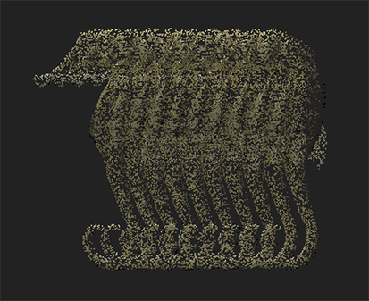

您可以在中创建深层数据 Nuke 通过:
• 在多帧处采样常规 2D 图像序列，为单个深帧中的每个像素创建多个样本。请参阅 使用输入帧将 2D 图像序列转换为深层帧 .
• 将普通 2D 图像转换为深度图像，每个像素在 depth.Z 通道定义的深度处都有一个样本。请参阅 将 2D 图像转换为深层图像 .
• 使用常规 2D 彩色图像重新着色深度样本。请参阅 重新着色深度数据 .
• 将 ScanlineRender 节点添加到 3D 场景并连接下游的深层节点。请参阅 使用 ScanlineRender 生成深层数据 .
可以使用 DeepFromFrames 节点从输入帧创建深度采样。
| 1。 | 将 DeepFromFrames 节点连接到您的素材。深层图像是通过将每个帧放置在不断增加的深度来创建的。 |
| 2. | 要调整结果，请使用 “属性” 面板中的控件: |
• 样品 -输出深层图像中每像素创建的样本数。
• 框架 范围 -用于一个深层图像的帧范围。例如，使用默认采样值 (5) 和帧范围值 (1-9)，DeepFromFrames 在时间 1 、 3 、 5 、 7 和 9 处采样。
• Premult -检查以预乘样本。
• 分裂 阿尔法 模式 -选择 添加剂 按样品数量进行直接除法或 乘法 分割 alpha，以便如果稍后进行展平，可以将其返回到其原始值 (例如，使用 DeepToImage 节点)。如果您选择 添加剂 ,Alpha 不能返回到其原始值。
• Zmin -分配给每个深像素输出的第一个样本的深度，对应于范围中的第一帧。
• Zmax -分配给每个深像素输出的最后一个样本的深度，对应于范围中的最后一帧。
|
 |
| 创建深雾元素的简单设置。 |
使用 DeepFromImage 节点，您可以将常规 2D 图像转换为深度图像，在 depth.Z 通道定义的深度处，每个像素都有一个样本。
| 1。 | 将 DeepFromImage 连接到要转换为 deep image 的镜头。 |
| 2. | 使用 Premult 输入 在 “属性” 面板中选择是否要预乘输入通道。 |
| 3. | 取消选中 保持 零 阿尔法 如果要从生成的深层图像中删除 alpha 值为零的任何样本，请选中此框。默认情况下，选中该框，生成的深层图像包含零 alpha 样本。 |
| 4. | 也可以使用指定深度 z 属性面板中的控件。在这种情况下，检查 指定 z 用于指示您不想从输入中使用深度通道的框。 |
使用 DeepRecolor 节点将仅包含每个样本不透明度的深度缓冲区文件与标准 2D 彩色图像合并。DeepRecolor 将输入 2D 图像的每个像素处的颜色分散到深度输入中相应像素的所有样本中。
| 1。 | 将你的深源连接到 深度 DeepRecolor 节点的输入，以及您的 2D 图像到 颜色 输入。如果 2D 图像是预乘的，您可能需要在颜色输入和深度颜色之间添加一个非预乘节点。 |
| 2. | 在 “属性” 面板中，您可以从 颜色 输入图像。 |
在下面的示例中，DeepRecolor 采用未预乘 。Exr 图像，并使用它来着色 。Dtex 文件的深度样本。

| 3. | 如果在这一点上，最终高质量平面渲染的 alpha 与深度样本表示的 alpha 不匹配 (例如, 由于压缩 (通常发生在磁盘上的深层文件或着色器的一些变化)，您可以检查 目标输入 alpha 。这意味着 颜色 输入的 alpha 分布在深层样本中，因此深层数据扁平化后最终产生的 alpha 与 颜色 输入的 alpha。 |
如果你离开 目标输入 alpha 未经检查, Nuke 所分配的颜色为每个样品由 unpremultiplying 颜色 图像的 alpha，然后再乘以每个样本的 alpha。在这种情况下，来自 DeepRecolor 的 alpha 可能与来自其的 alpha 不匹配 颜色 输入。
如果下游有深度节点，ScanlineRender 节点将输出深度数据。
| 1。 | 创建 3D 场景并将 ScanlineRender 节点附加到该场景，以将场景渲染为 2D 图像。 |
注意: 深度合成仅支持 结束 混合模式。因此，如果 3D 场景中有一个 BlendMat 节点，其 操作 似乎总是设置为 结束 当转换为深。
| 2. | 从中添加节点 深 ScanlineRender 下游的菜单。 |

| 3. | 如果您不希望 alpha 值为 0 的深度样本有助于输出，请打开 ScanlineRender 属性并确保 零 alpha 样本 已启用。 |
| 4. | 像往常一样调整 ScanlineRender 属性的其余部分。例如: |
• 如果在渲染中看到任何锯齿瑕疵，请转到 多样本 标签和增加 样品 。这将增加每个像素的深度采样数。
或者，您可以设置 抗锯齿 到 低 , 介质 ,或 高 在 ScanlineRender 标签。
|  |  |
| 样品 设置为低值。 | 样品 设置为高值。 |
• 如果要向 3D 场景添加运动模糊，请增加 样品 在快门时间内对图像多次采样的值。
在 快门 字段中，输入当运动模糊时快门保持打开的帧数。如果渲染变得非常慢，您可以近似多示例渲染，并通过增加渲染时间来减少渲染时间 随机样本 .
|  |  |
| 没有运动模糊。 | 与运动模糊。 |
有关 ScanlineRender 属性的更多信息，请参见 渲染 3D 场景 .
提示:
可以在 ScanlineRender 之后使用 DeepToPoints 节点来创建表示场景中运动的三维点云。有关 DeepToPoints 的更多信息，请参见
从深层图像创建 2D 和 3D 元素
.

|
|